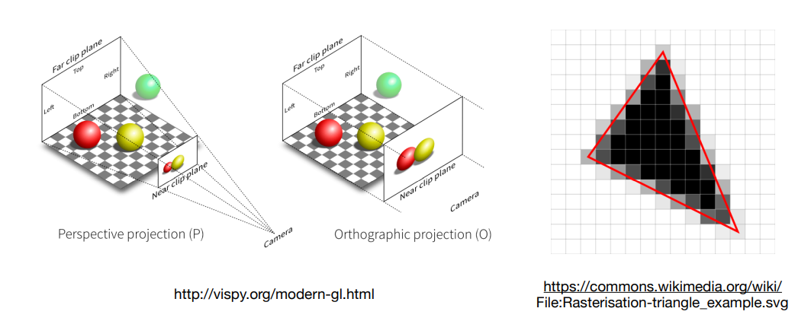
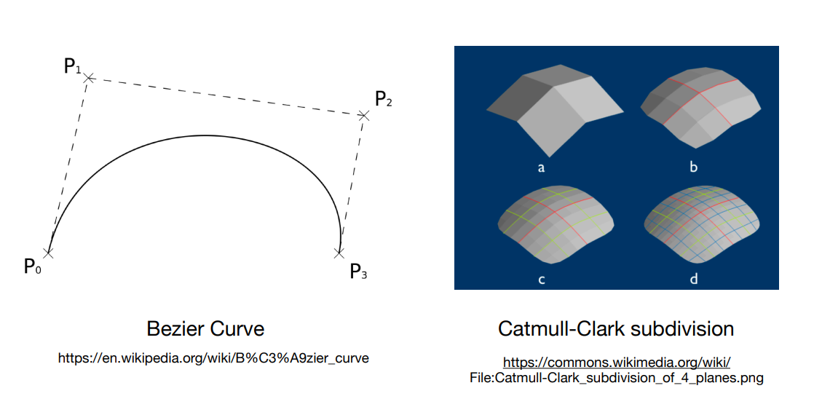
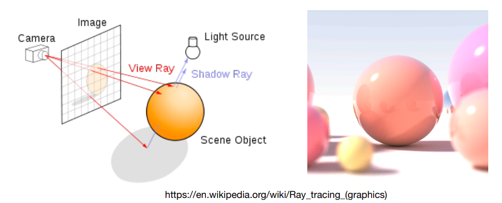
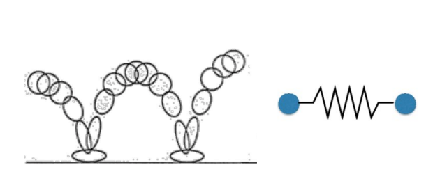
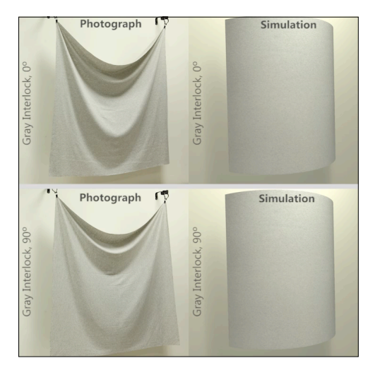
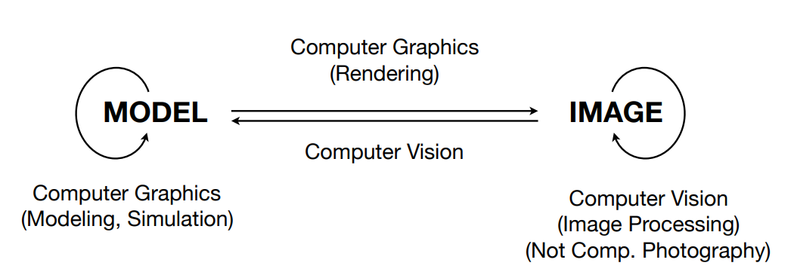

# 计算机图形学概述
# 光栅化（Rasterization）
什么叫光栅化？把三维空间中的几何形体显示在屏幕上，这就是光栅化。广泛应用于实时的图形学中。
- Project geometry primitives (3D triangles/polygons) onto the screen
- Break projected primitives into fragments (pixels)
- Gold standard in Video Games (Real-time Applications)

# 曲线和网格（Curves and Meshes）
几何这边涉及到如何表示一条光滑的曲线，如何表示曲面，如何用简单的曲面通过曲面细分的方法得到一些更复杂的曲面。以及在形状发生变化时这个面要怎么变化，如何保持住这个面的拓扑结构。
- How to represent geometry in Computer Graphics

# 光线追踪（Ray Tracing）
动画和电影里面着重使用的技术，虽然慢，但是它能生成非常真实的画面。也有些新的技术，例如实时光线追踪。
- Shoot rays from the camera though each pixel
- Calculate intersection and shading
- Continue to bounce the rays till they hit light sources
- Gold standard in Animations / Movies (Offline Applications)

# 动画 / 仿真（Animation/Simulation）
涉及到例如模拟一颗有弹性的小球还有布料模拟等方面的模拟。
- Key frame Animation
- Mass-spring System


# 计算机图形学和计算机视觉之间的区别
Model 更多的是认为描述的是三维中几何的形体，对于渲染来说则是描述材质和光照，这些是一开始在三维空间中有的东西，然后我们要把它转换成一幅图（IMAGE），这个渲染的过程就叫做计算机图形学。而从图像分析出它是一个什么样的一个结构这就是计算机视觉的内容。而随着它们之间结合的越来越紧密，它们之间区分的界限也越来越模糊。
